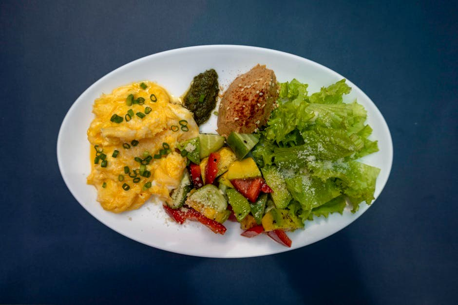

Egg Salad & Smoked Turkey Protein Plate

Egg Salad & Smoked Turkey Protein Plate delivers 70 g of protein for just 6 g net carbs — a no-cook assembly job that still hits the numbers. Exactly the kind of meal that makes a high-protein, low-carb week easy to stick to.
Ingredients
- 4 Large eggs (hard-boiled)
- 220 g Smoked deli turkey
- 30 g Sharp cheddar cheese
- 30 g Plain 0% Greek yogurt
- 100 g Cucumber & cherry tomatoes
- Dijon mustard, salt, pepper, to taste
Equipment
- saucepan
Method
- Mash the hard-boiled eggs with Greek yogurt and mustard; season.
- Arrange the egg salad, rolled smoked turkey, cheddar and fresh vegetables on a plate.
- Eat as a composed plate or wrap the turkey around the egg salad.
Storage & make-ahead
Best assembled fresh. Prep the components up to 2 days ahead, keep chilled, and combine just before eating.
Tip
A no-cook, high-protein 'snack plate' scaled up to a full 70 g meal. Great for office lunches.
Dietary swaps
Dairy-free: Sharp cheddar cheese → dairy-free cheese; Plain 0% Greek yogurt → unsweetened coconut or soy yogurt (for lactose intolerance or a dairy-free diet)
Full nutrition (estimated, per serving): 560 kcal · 70 g protein · 6 g net carbs · 34 g fat (13.5 g sat) · 2 g fiber · 6 g sugar · 3130 mg sodium. Allergens: Milk, Egg. Macros are realistic estimates from standard food-composition values; brands and portions vary.
Get the full cookbook (PDF) — 100 recipes, 3 meal plans & the science →